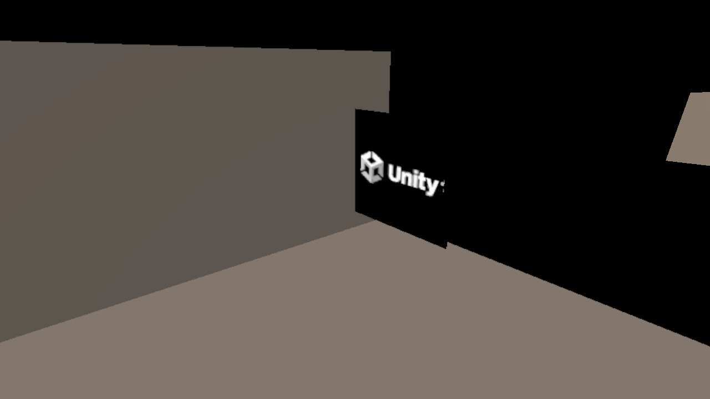
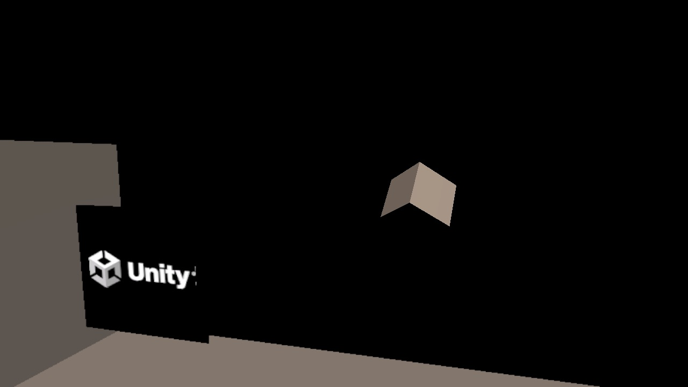

今日の内容
本日のアジェンダ
前回の課題（スマホで動いた画面）の確認
Unity Learn の AR 講座と、今日のチュートリアル
① 準備の確認（スマホの OS・Xcode・Unity のモジュール）
② AR Mobile テンプレートで新しいプロジェクトを作る
③ プロジェクトの中身を見る（パッケージ・Player 設定）
④ AR のシーンを新しく作る ⑤ シーンの中身を見て Play する
⑥ もっとやってみよう（任意）
今日は、Unity 公式の学習サイト Unity Learn の AR 講座にある1本のチュートリアルに沿って進めます。マウス があると仮想の部屋を見回しやすいです（無くても OK）。
Unity Learn
Unity 公式の講座「Mobile AR Development」
Unity Learn は Unity 公式の無料の学習サイト（英語）。その中のモバイル AR の講座の、最初の単元「Get started with AR」の2本目が今日の内容です。
Welcome to AR Development AR とは（紹介）
→
Configure your AR development environment AR の開発環境を整える（今日）
→
Deploy your project to iOS or Android スマホに入れて確かめる
講座全体：Get started with AR ／ Create a basic face filter ／ Create an interactive face filter ／ Create a marker-based AR app ／ Create a plane detection AR app ／ AR experience design
チュートリアル：Configure your AR development environment（Unity 2022.3 版） 。ページ上部のバージョンは 2022.3 を選んでおく。
今日のゴール
AR 用のプロジェクトとシーンを作って、Play で動かす

1 AR 用のシーンを Play → Unity の中の仮想の部屋（XR Environment ）が映る

2 見回すと、奥で回っているキューブ （テンプレートの目印）が見つかる
どちらも、今日の手順どおりに作ったプロジェクトを実際に Play した画面です（Unity 2022.3.62f3 ／ AR Mobile テンプレート 1.1.1）。
なぜ準備が多い？
AR はパソコンとスマホ、2台で作る
💻
パソコン（Mac） Unity で作る。iPhone 用は Xcode でスマホに入れる ⇄
⇄
📱
スマホ カメラとセンサーで現実を認識（iPhone は ARKit、Android は ARCore）
ふつうの Unity の作品より準備が多いのは、2台の機械の両方 にソフトが必要だから。今日は、その準備ができているかを確かめてから、最初から AR 用に設定されたプロジェクト を作って中身を見ていきます。
全体の流れ
今日やること ― ① から ⑥
①
準備の確認 スマホの OS・Xcode・Unity のモジュール 待ち 数分 ②
プロジェクトを作る AR Mobile テンプレート ④
AR のシーンを作る AR Scene Template ⑤
シーンを見て Play XR Environment（仮想の部屋） ⑥
もっとやってみよう 回り方を変える・形を変える（任意）
② はテンプレートのダウンロードとプロジェクトの準備に数分〜10分 かかります。待っている間に次のスライドを読んでおきましょう。
STEP ① 準備の確認
自分のスマホは iOS？ Android？ ― 必要なもの
iPhone（iOS） Android Unity 2022.3.62f3 LTS （春学期から使っているもの）Unity のモジュール iOS Build Support Android Build SupportOpenJDK・Android SDK & NDK Tools も そのほか Xcode（第2回で配った .xip ） なし（USB デバッグは第2回で設定済み）
第2回でスマホにアプリを入れるところまでできた人は、確認だけで OK 。モジュールがまだの人は、Unity Hub →「インストール」→ 2022.3.62f3 の ⚙ →「モジュールを加える」（第2回と同じ）。Unity Hub は、起動したときに更新の案内が出たら最新にしておきます。
チュートリアルには「App Store から Xcode を入れる（12GB 以上）」とありますが、App Store の最新の Xcode は macOS 26.6 以降が必要です。授業では第2回で配った Xcode 16.4／26.5 を使います （入れ直さない）。
STEP ② プロジェクトを作る
Unity Hub で「AR Mobile」テンプレートを選ぶ
1
左の「プロジェクト」→ 右上の「新しいプロジェクト」
2
「エディターのバージョン」を確認 2022.3.62f3 になっているか。違っていたらクリックして選ぶ
3
テンプレート「AR Mobile」を選ぶ チュートリアルでは「AR Mobile Core」と書かれている（Hub では「AR Mobile」＋「コア」の表示）
4
「テンプレートをダウンロード」 最初の1回だけ（約 70MB）
5
プロジェクト名：自分の名前_AR_Project 例：yamada_AR_Project（半角英数字）。保存場所も確認
6
組織は自分のもの →「プロジェクトを作成」 Unity Cloud などのチェックは付けない
新しいプロジェクト
エディターのバージョン：2022.3.62f3 LTS ▾
すべてのテンプレート
コア
サンプル
学ぶ
2D コア
3D コア
AR Mobile コア ⬇
Universal 3D など
（並び順は Hub のバージョンで変わる）
AR Mobile
The AR Mobile Project Template configures project settings …
テンプレートをダウンロード
プロジェクト名
yamada_AR_Project
保存場所
/Users/（自分）/Unity
組織
（自分の名前） ▾
Unity Cloud → オフ
プロジェクトを作成
2
3
4
5
6
図は画面を簡略化したものです（Unity Hub 3.21・日本語表示）。名前・保存場所には日本語やスペースを使わない（おすすめはホームフォルダの中の「Unity」フォルダ）。
STEP ② 開いたら
プロジェクトが開いたら
最初は開くまで数分〜10分 かかります（AR や見た目の部品をたくさん準備している）。止まって見えても待つ「AR Mobile Template 」のウィンドウ（Welcome to the AR Mobile Template project!）が出たら →「Close 」
最初に開いているシーンは SampleScene （物を置いて遊べる、テンプレートのサンプル）。今日はこれとは別に、自分で新しいシーンを作ります
このテンプレートは URP （ユニバーサルレンダーパイプライン）。春学期の「3D」とはマテリアルの設定が少し違う（色は Albedo ではなく Base Map ）
第1・2回の ARテンプレート（授業用に用意したもの）と同じく、AR に必要な設定が最初から入ったプロジェクトです。今日は、その中に何が入っているのか を見ていきます。
STEP ③ パッケージ
AR のための4つのパッケージ
Window › Package Manager › 左上を「Packages: In Project」に
パッケージ 役割 AR Foundation 5.2.0 AR の部品（GameObject やスクリプト）の共通の窓口。iPhone でも Android でも同じ作り方ができる Apple ARKit XR Plugin 5.2.0 iPhone の AR（Apple の ARKit ）と AR Foundation をつなぐ Google ARCore XR Plugin 5.2.0 Android の AR（Google の ARCore ）と AR Foundation をつなぐ XR Plugin Management 4.5.0 iPhone・Android・Play（XR Simulation）で、どの AR を使うかを切り替える
ARKit のほうが使える機能が多い（3D の物体や体の動きの認識など）。ほかに XR Interaction Toolkit （画面のタッチで物をつかむ・動かすための部品）なども入っています。第2回の図と同じく、AR Foundation が「差し替え口」になっています。
STEP ③ Player 設定
AR のための設定も、最初から入っている
Edit › Project Settings… › Player › iOS／Android のタブ › Other Settings
設定 テンプレートの値 意味 Graphics APIs Android OpenGLES3 だけ ARCore が Vulkan に対応していないので外してある Minimum API Level Android Android 11.0（API level 30） これより古い Android には入らない Scripting Backend Android IL2CPP 64bit で動かすため（Mono ではない） Target Architectures Android ARMv7 ＋ ARM64 Google Play の「64bit 必須」に合わせる Target minimum iOS Version iOS 12.0 授業の Xcode では 15.0 以上が必要 → スマホに入れるときは 15.0 に Camera Usage Description iOS AR Camera カメラを使う許可をもらうときの説明文
Bundle Identifier はテンプレートのまま（com.unity.template.armobile）だと全員同じ名前 → スマホに入れるときは第2回と同じく com.名字＋名前.～ に変えます。
STEP ④ AR Scene Template
AR 用のひな形からシーンを作る
1
File → New Scene（Cmd + N） 「New Scene」ウィンドウが開く
2
左の一覧で「AR」を選ぶ 説明に「A scene configured for AR Development.」。Basic (URP)／Standard (URP) ではない
3
右下の「Create」 AR 用のシーンができる（まだ名前なし＝Untitled）
4
File → Save As… → Assets の Scenes フォルダ → 名前「AR Template Scene」→ Save
New Scene
🔍
AR
Basic (URP)
Standard (URP)
AR
A scene configured
for AR Development.
Create Additive
Create
2
3
保存すると、Scenes フォルダに AR Template Scene （シーン）と、同じ名前のフォルダ ができます。フォルダの中はシーンで使う部品のコピーなので、消さない でください。
STEP ⑤ シーンの中身
AR のシーンに入っているもの
Hierarchy
AR Template Scene
▼ XR Origin (AR Rig)
▼ Camera Offset
Main Camera
▶ Screen Space Ray Interactor
AR Session
Cube
Directional Light
スマホそのもの。現実でスマホを動かすと、同じように動く
AR のカメラ（MainCamera タグ）。スマホのカメラの映像を映す
画面のタッチで物を操作する部品（XR Interaction Toolkit）
AR 全体の管理（起動・状態）。シーンに1つだけ
目印のキューブ。前に 7m・1m の大きさで、回り続ける
ライト
Hierarchy の名前をクリックすると、Inspector にその部品（コンポーネント）が出ます。第2回で見たテンプレートとは名前が少し違っても、しくみは同じです。
STEP ⑤ 見回し方
仮想の部屋を見回す・歩く
マウスがある人（チュートリアルの方法）
右クリックを押したまま マウスを動かす → 向きが変わる押したまま W / A / S / D で移動、Q / E で下・上、Shift で速く
右クリックを離すと止まる
トラックパッドの人（おすすめ）
Finder で game1_template_ar → Assets → Scripts → EditorCameraNavigation.cs
Unity の Project の Assets にドラッグ （コピーされる）
それを Hierarchy の XR Origin (AR Rig) にドラッグ
→ 矢印キー＋W / A / S / D で見回せる（第1・2回と同じ操作）
キーが効かないときは、Game ビューを一度クリック してから。EditorCameraNavigation はエディターの中だけで働くスクリプトです（スマホのアプリでは何もしません）。テンプレートが手元に無い人は、授業ページ第1回の「配布」から。
⑥ キューブを回しているスクリプト
SceneTemplate_RotateCube を読んでみよう
public class SceneTemplate_RotateCube : MonoBehaviour
{
public float rotateSpeed = 1f ; // 回る速さ
public Vector3 objectRotation; // どの向きに回るか
void Update ()
{
transform.Rotate (objectRotation * Time .deltaTime * rotateSpeed);
}
}
public の変数Inspector に出てくる（春学期と同じ）。Cube を選ぶと「Scene Template_Rotate Cube」の Rotate Speed （このシーンでは 4）と Object Rotation （4, 5, 1） transform.Rotate(…)毎フレーム、少しずつ回す Time.deltaTime前のフレームからの時間。パソコンやスマホの速さに関係なく、同じ速さで回る
ファイルは Assets → Settings → Project Configuration の中にあります（ここではコメントを日本語にして短くしています）。
今日のまとめ
第3回のまとめ
AR はパソコンとスマホの2台 で作る → 両方に準備がいる（Xcode／Build Support）
AR Mobile テンプレート ：AR のパッケージ（AR Foundation・ARKit・ARCore・XR Plugin Management）と Player 設定が最初から入ったプロジェクトAR Scene Template （New Scene の「AR」）で、XR Origin (AR Rig)・AR Session 入りのシーンがすぐ作れるPlay すると XR Environment （仮想の部屋）で試せる。右クリック（または矢印キー）で見回す
次のチュートリアル：Deploy your project to iOS or Android （スマホに入れて確かめる）
今日作った 自分の名前_AR_Project は、消さずに取っておいてください。